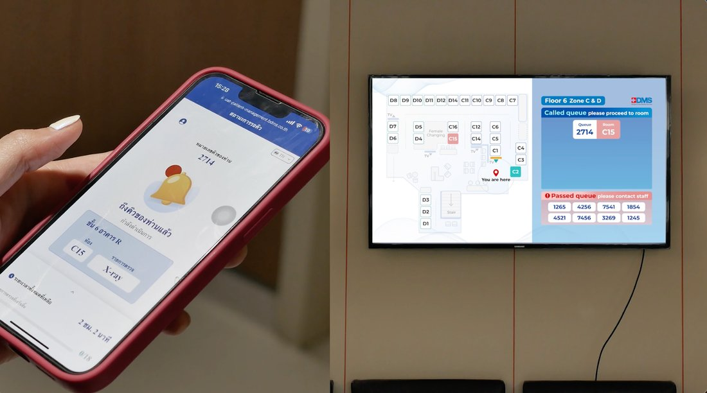
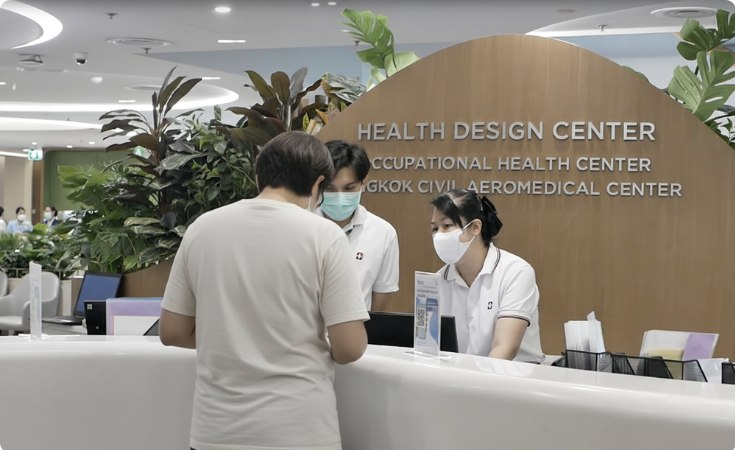

02 / 04
จากผลงานหน้างานที่ไร้หลักฐาน
สู่ Proof Asset ที่ทีมขายใช้ปิดดีล
Agnos Health · B2B Content Strategy · Sales Enablement
เปลี่ยนผลสำเร็จของการติดตั้ง AI ในโรงพยาบาลแห่งเดียว ให้กลายเป็น Enterprise Proof Asset ชิ้นแรกของบริษัท ที่ถูกใช้เป็นมาตรฐานเดียวกันตลอดเส้นทางการขาย B2B เพื่อช่วยให้ผู้บริหารโรงพยาบาลตัดสินใจซื้อได้อย่างมั่นใจ
Clientโรงพยาบาลกรุงเทพ
Audienceผู้บริหารโรงพยาบาล (C-level, ผู้อำนวยการฝ่ายคลินิก, ผู้นำฝ่าย IT & Operations)
EmployerAgnos Health
Project Roleสถาปนิกกลยุทธ์การสื่อสาร และหัวหน้าฝ่ายการตลาด
บทบาทและความเป็นเจ้าของงาน
- วางกลยุทธ์การสื่อสาร B2B Case Study และ Sales Enablement Framework แบบ End-to-End
- ลงพื้นที่วิจัยหน้างาน (On-site Fieldwork) และออกแบบคำถามสัมภาษณ์เชิงลึกกับผู้บริหารการแพทย์ (ผู้อำนวยการศูนย์ HDC, หัวหน้าพยาบาล, และอดีตรองผู้อำนวยการใหญ่ฝ่ายสารสนเทศ)
- เรียบเรียงและแปลความซับซ้อนของเทคโนโลยี AI และ Clinical Workflows ให้กลายเป็นเรื่องราวเชิงยุทธศาสตร์ที่วัดผลได้จริง
- ผลิตชิ้นงาน Proof Asset หลายรูปแบบ (Long-form Case Study, B2B Sales One-Pager, ชุด Executive Quote, วิดีโอลูกค้า, เอกสารประกอบการเสนอราคา และสื่อนำเสนอสำหรับผู้บริหาร) เพื่อซัพพอร์ตทุกขั้นตอนของงานขาย B2B ตั้งแต่บทสนทนาแรกไปจนถึงการเสนอราคาและการนำเสนอผู้บริหาร
โจทย์
ในตลาด B2B Health-Tech สัญญาขายระบบโรงพยาบาลมีมูลค่าหลักล้านบาท ผู้บริหารโรงพยาบาลเป็นกลุ่มที่ระวังความเสี่ยงสูงมาก
เครื่องมือการตลาดแบบเดิมๆ ไม่สามารถสร้างความเชื่อถือได้เลย — ผู้บริหารไม่เชื่อโบรชัวร์โฆษณา ไม่เชื่อคำเคลมฟีเจอร์ AI ทั่วไป
เมื่อ Agnos นำระบบ AI Smart Patient Management เข้าไปติดตั้งใช้งานจริงที่ Health Design Center (HDC) โรงพยาบาลกรุงเทพ สำนักงานใหญ่
ซึ่งรองรับผู้ป่วย 200–400 คน/วัน และมีแพ็กเกจตรวจสุขภาพซับซ้อนกว่า 70 แพ็กเกจ Agnos มีผลงานความสำเร็จจริงหน้างาน
แต่ยังขาด "หลักฐานเชิงรูปธรรมที่ถูกเรียบเรียงอย่างมีระบบ" เพื่อนำไปโชว์โรงพยาบาลเป้าหมายรายถัดไป
โจทย์สำคัญคือ: ทำอย่างไรให้การปรับใช้งานจริงในโรงพยาบาลแห่งแรก กลายเป็น Asset พิสูจน์ความน่าเชื่อถือที่ทีม Sales นำไปใช้ปิดการขายได้อย่างไร้แรงต้าน?
แนวทาง
ฉันวางกลยุทธ์โดยยึดหลัก "Credibility-First & Objection-Removal" แทนที่จะเขียนบทความโปรโมตตัวเองแบบโฆษณา
ฉันใช้วิธี Reverse Engineering ออกแบบ Case Study ย้อนกลับจากความกลัวและข้อโต้แย้งในใจของผู้บริหาร B2B
เช่น "พยาบาลจะยอมใช้ไหม?", "ระบบ AI จะรวนกับคิวที่ซับซ้อนไหม?", "เคยลองเจ้าอื่นมาแล้วพัง จะต่างกันยังไง?"
หลักการที่ยึดถือ
- Peer-to-Peer Authority — ให้ผู้อำนวยการศูนย์และหัวหน้าพยาบาลผู้ใช้งานจริงเป็นคนพูดแทนแบรนด์ เปลี่ยนบทความการตลาดให้กลายเป็นคำยืนยันระดับวิชาชีพ
- Evidence-Backed Transformation — ไม่ใช้คำหรูลอยๆ แต่พิสูจน์ด้วยข้อมูลสถิติที่ปฏิเสธไม่ได้ ควบคู่กับเสียงสะท้อนจริงจากผู้ป่วยและเจ้าหน้าที่
- Sales-First Asset Design — ออกแบบเนื้อหาทุกส่วนให้สามารถย่อยนำไปใช้เป็นอาวุธการขายสำหรับทีม Sales ได้ทันที
สิ่งที่สร้างขึ้น
01 กรอบการสัมภาษณ์ผู้บริหาร
ออกแบบกรอบการสัมภาษณ์ผู้บริหารและบุคลากรการแพทย์หน้างาน โดยดึง pain point ลึกๆ ก่อนใช้ระบบ (ปัญหาคอขวด, ใบขั้นตอนกระดาษ, การมองไม่เห็นภาพรวม) และความลังเลในตอนแรกขึ้นมาเปิดเผยอย่างจริงใจ เพื่อขจัดความเสี่ยงในใจผู้อ่าน
02 การแปลเรื่องราวเชิงธุรกิจ
แปลงการทำงานของอัลกอริทึม AI (เช่น AI Co-pilot, Resource Management, Dynamic Queueing) ให้กลายเป็นภาพภาษาธุรกิจที่เห็น impact ชัดเจน: ไม่ใช่แค่จัดคิวตามลำดับ แต่เป็นการบริหารทรัพยากร และคืนเวลาให้พยาบาลกลับไปดูแลคนไข้
03 กรอบหลักฐาน
เรียบเรียงผลลัพธ์ครอบคลุม 3 มิติหลักเพื่อสร้างความเชื่อมั่น 360 องศา: องค์กร/operational metrics, ผู้รับบริการ (patient experience), และทีมพยาบาลหน้างาน (staff satisfaction) — ตัวเลขทั้งหมดอยู่ในหัวข้อ "ผลลัพธ์" ด้านล่าง
04 ระบบ Proof Asset สำหรับ Enterprise Sales
ออกแบบระบบ Proof Asset ที่ใช้ซ้ำได้ ประกอบด้วย Long-form Case Study, วิดีโอผู้บริหาร, B2B Sales One-Pager, สรุป KPI พร้อมใช้เสนอราคา, คลัง Executive Quote และสื่อนำเสนอ — ให้ทีม Business Development หยิบไปใช้ซ้ำได้ในทุกขั้นตอน ตั้งแต่ pitch, demo, เสนอราคา, follow-up ไปจนถึงนำเสนอนักลงทุน


ระบบจริงที่หน้างาน — แอปแจ้งคิวบนมือถือ จอแสดงคิวบนผนัง และเคาน์เตอร์ต้อนรับที่ Health Design Center
ผลลัพธ์และชิ้นงาน
ผลกระทบเชิงธุรกิจ
Enterprise Proof Asset ชิ้นแรกที่บริษัทมีมาตรฐานเดียวกันทั้งองค์กร ถูกใช้ในทุกจุดของงานขาย B2B — ทุกข้อเสนอ, ทุกการพิตช์, การติดตามหลัง demo, การนำเสนอลูกค้า และการนำเสนอนักลงทุน
ผลลัพธ์เชิงผลิตภัณฑ์ที่สนับสนุน
Proof Asset นี้สื่อสารผลลัพธ์ที่ผ่านการตรวจสอบจากการติดตั้งจริงที่โรงพยาบาลกรุงเทพ ได้แก่:
บทสรุปภาพรวม
เปลี่ยนผลงานการติดตั้งระบบ AI ในโรงพยาบาลกรุงเทพ 1 แห่ง ให้กลายเป็น "Business Proof Asset" ถาวรที่ทรงพลังที่สุดของบริษัท
ช่วยทลายกำแพงความกลัวเรื่องความซับซ้อนของระบบ สร้างความน่าเชื่อถือในระดับสูงสุดให้กับแบรนด์ Agnos
และเปิดโอกาสการขยายผลสู่ Smart OPD ทั่วทั้งโรงพยาบาล
สิ่งที่ยากที่สุดของเคสนี้ไม่ใช่การเขียน แต่คือการตัดสินใจว่าจะไม่เขียนอะไร —
เลือกเปิดเผยความลังเลของโรงพยาบาลในตอนแรกแทนที่จะซ่อนมันไว้ เพราะกับผู้บริหารที่ระวังความเสี่ยงสูง
ความจริงที่ตรวจสอบได้คือสิ่งเดียวที่ทำงานได้
สิ่งที่ได้เรียนรู้
- Peer Evidence ปิดดีล B2B ที่มีเดิมพันสูงได้: ในธุรกิจโรงพยาบาล การให้ผู้นำการแพทย์พูดแทนเรา มีน้ำหนักมากกว่าแบรนด์พูดเองร้อยเท่า
- ตัวเลขที่วัดคุณค่าความเป็นมนุษย์ได้: ผลลัพธ์ B2B Marketing ที่ทรงพลังที่สุด คือการเชื่อมโยงตัวเลขประสิทธิภาพทางธุรกิจ (+15%) เข้ากับคุณภาพชีวิตที่ดีขึ้นของคนหน้างาน (+52%)
- Content คือ Asset ไม่ใช่แค่ข่าวสาร: คอนเทนต์ที่ดีต้องไม่ได้ทำหน้าที่แค่แจ้งข่าว แต่ต้องถูกออกแบบให้กลายเป็น asset ที่ช่วยทีม Sales ปิดการขายได้จริง
อ่านบทความฉบับเต็ม →
ดูวิดีโอประกอบเคส →
02 / 04
From Proof-less Results
to the Asset That Closes Hospital Deals
Agnos Health · B2B Content Strategy · Sales Enablement
Transformed one successful AI hospital deployment into the company's first enterprise proof asset—standardized across the B2B sales journey to help hospital executives make confident buying decisions.
ClientBangkok Hospital
AudienceHospital Executives (C-level, Clinical Directors, IT & Operations Leaders)
EmployerAgnos Health
Project RoleProduct Marketing Lead
Role & Ownership
- Designed the end-to-end enterprise proof asset strategy, B2B case study communication, and sales enablement framework.
- Conducted on-site fieldwork and designed in-depth interview questions with medical leadership — the HDC Center Director, the Head Nurse, and the former Deputy Director of Information Systems
- Translated the complexity of AI technology and clinical workflows into a strategic, measurable narrative
- Built a multi-format enterprise proof ecosystem—including a long-form case study, sales one-pager, executive quote system, customer video, proposal assets, and executive presentation materials—to support every stage of the enterprise sales process—from first conversations to proposals and executive presentations.
Challenge
In the B2B HealthTech market, hospital system contracts run into the millions of baht, and hospital executives
are highly risk-averse. Conventional marketing tools don't build trust here — executives don't believe ad
brochures, and they don't believe generic AI feature claims.
When Agnos deployed its AI Smart Patient Management system live at the Health Design Center (HDC), Bangkok
Hospital's headquarters — handling 200–400 patients a day across more than 70 complex health-check packages —
Agnos had real, working proof on the ground, but no evidence organized systematically enough to show the
next target hospital. The real question was: how do you turn a single live hospital deployment into a
credibility asset the sales team can use to close deals without friction?
Approach
I built the strategy around credibility-first, objection-removal rather than self-promotional persuasion.
I reverse-engineered the case study from the fears and objections already sitting in a B2B executive's head —
"will the nurses actually adopt this?", "will the AI break under a complex queue?", "we tried another vendor
and it failed — how is this different?" — and wrote toward answering those, not toward selling.
Core Principles
- Peer-to-Peer Authority — let the center director and head nurse, the actual users, speak instead of the brand, turning a marketing article into professional-grade validation.
- Evidence-Backed Transformation — no vague superlatives; every claim backed by hard statistics, paired with real voices from patients and staff.
- Sales-First Asset Design — every section written to be modular, so the sales team can lift any piece and use it directly as a selling tool.
What I Built
01 Executive Interview Framework
Designed the interview framework used with executives and frontline medical staff — surfacing the deep pain points that existed before the system (bottlenecks, paper-based processes, no visibility across departments) and the initial hesitation honestly, to remove perceived risk rather than hide it.
02 Business Narrative Translation
Translated how the AI algorithms actually work — AI co-pilot, resource management, dynamic queueing — into business-language impact: not "it sorts queues," but "it manages resources and gives nurses their time back to care for patients."
03 Evidence Framework
Organized product evidence into three complementary layers to build 360-degree confidence: organizational/operational metrics, patient experience, and frontline staff satisfaction — full numbers are in the Results section below.
04 Enterprise Proof Ecosystem
Designed a reusable enterprise proof system consisting of a long-form case study, executive video, B2B sales one-pager, proposal-ready KPI summaries, executive quote library, and presentation assets—allowing business development teams to reuse the same evidence across pitches, demos, proposals, follow-ups, and investor presentations.
The system in real use — the mobile queue app, the wall-mounted queue display, and the reception counter at the Health Design Center
Impact & Deliverables
Business Impact
The company's first standardized enterprise proof asset. Used in every enterprise proposal, pitch, post-demo follow-up, customer presentation, and investor deck.
Customer Results Communicated
The proof asset communicated verified outcomes from the Bangkok Hospital deployment, including:
Outcome
One live AI deployment at one hospital became the company's single most powerful, permanent business-proof
asset — breaking down the fear around system complexity, building the highest level of trust in the Agnos
brand, and opening the door to expanding Smart OPD hospital-wide.
The hardest part of this case wasn't the writing — it was deciding what not to write. We surfaced the
hospital's initial hesitation instead of hiding it, because with risk-averse executives, verifiable honesty is
the only thing that works.
Key Learnings
- Peer evidence closes high-stakes B2B deals: in hospital business, letting medical leaders speak for us carries a hundred times more weight than the brand speaking for itself.
- Quantifiable human metrics: the most powerful B2B marketing results connect business-efficiency numbers (+15%) to real improvements in the working lives of frontline staff (+52%).
- Enterprise content should function as reusable sales infrastructure: not a campaign deliverable. The highest-performing B2B content reduces uncertainty long before a salesperson begins selling.
Read the published article →
Watch the case video →